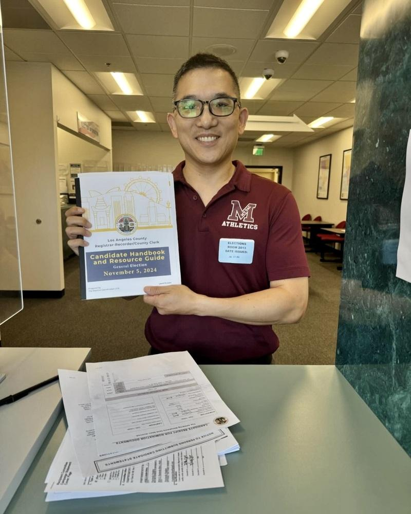

2024民主党全国代表大会，将于8月19日至22日在芝加哥联合中心举行， 加州民主党（CADEM）将派出超过500人的庞大代表团，洛杉矶华人代表陈介飞、李天薇、Cindy Chen等人出席，选举和见证首位女性少数族裔总统提名人。
据加州民主党官网介绍，出席全代会的加州民主党代表团由496名代表（Delegate）和 35 名候补代表（Alternates）组成，其中亚太裔（Asian/Pacific Is.）占比16%，包括洛杉矶地区的华人陈介飞（Jay Chen）、李天薇（Olivia Lee）、Cindy陈等。
陈介飞现任圣安东尼社区大学（Mount San Antonio College）理事（trustee），也是2024民主党全国大会代表。他表示，这次大会最重要的议程，就是确认贺锦丽（Kamala Harris）作为民主党总统提名人（Democratic presidential nominee），以及她本人接受大会提名并发表演说。她将是美国历史上，首位民主党少数族裔总统提名人；如果11月大选获胜，她将谱写历史新篇章。
另两位华人党代表，也都是洛杉矶华人社区熟悉的从政活跃人士。李天薇现任Reyes Coca-Cola公司政府关系及公共事务资深总监，曾经担任加州民主党常务委员会共同主席及洛杉矶县民主党委员会秘书长；Cindy Chen则担任洛县政委员苏丽丝（Hilda Solis）的幕僚长（Chief of staff）多年，也曾经担任过前加州众议长维拉莱构沙（Antonio Villaraigosa）的助理。
今年民主党全代会8月19日开幕，至22日落幕一共四天，陈介飞等人将提前于18日出发，行程至少五天。机票旅馆餐饮大约2000元全部自费，支持民主党竞选。
除出席民主党全代会，陈介飞不久前又登记竞选连任圣安东尼社区大学理事。他表示，很高兴申请连任，圣安东尼社区大学被评为加州排名第一流的社区学院，每年改变量万名青少年生活。他很自豪能够成为该校理事会一员，引导这个出色的教学机构走向未来。陈介飞2015年首次当选，此次竞选成功将是第三任，目前有两名挑战者，三人争一席。